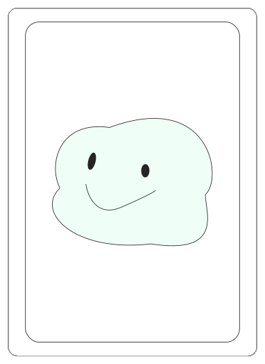
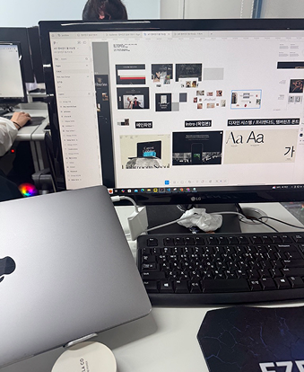
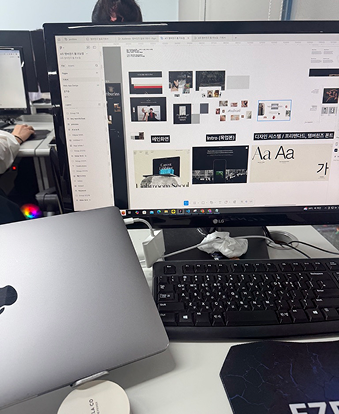

CLOSE
Designer Fortune ✧∘°
-
창의적 영감
새로운 아이디어가 떠오르는 하루입니다. 평소와 다른 관점에서 문제를 바라보세요.
-


협업의 기회
다른 사람과의 협력을 통해 더 큰 성과를 얻을 수 있습니다. 소통에 집중하세요.
-

완성의 순간
진행 중인 프로젝트가 결실을 맺을 때입니다. 마지막까지 최선을 다하세요.
운세 열어보기


 



 01_work.jpeg
01_work.jpeg